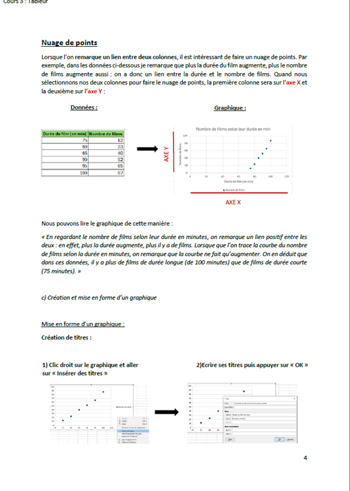
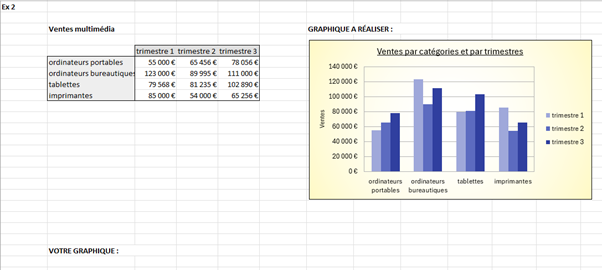
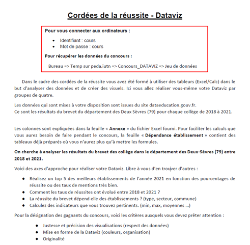
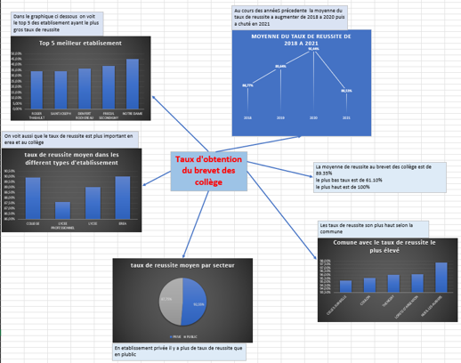

Besoin du territoire
En octobre 2023, dans le cadre des cordées de la réussite, nous avons reçu la mission d’enseigner les bases du logiciel de tableur Excel à une classe de 4ème du collège Jean Zay. Ce dispositif consiste à accompagner et proposer des enseignements aux élèves dans le but de susciter l’ambition scolaire et lutter contre l’auto-censure.
Pour réaliser cela, nous avons organisé des séances de cours avec la classe, dans lesquels ils ont pu apprendre le fonctionnement d’un tableur et utiliser des formules sur Excel. L’objectif final de ce projet était d’organiser un concours de DataVisualisation au sein de la classe, ce qui consiste à mettre en forme des données afin de les rendre interprétables plus rapidement, sous forme de graphiques par exemple.
La première séance a pu servir à poser les bases de l’utilisation d’un tableur, en leur enseignant la mise en forme d’un tableau, la réalisation d’opération simples et l’utilisation de formules Excel à travers des exercices et des leçons. Tandis que les deux dernières se sont concentrées sur la création et réalisation de graphiques, avec des exercices d’interprétations.
Le jour du concours de Datavisualisation, nous sommes venus préparés avec un sujet et des données sur le thème de la réussite du brevet des collèges en Deux-Sèvres. Les élèves ont pu bénéficier de notre aide et conseils tout au long du concours s’ils rencontraient des difficultés. Après cela, une petite cérémonie présentant les meilleures réalisations a été organisée, les gagnants ont pu recevoir des souvenirs de l’IUT de Niort.
Compétences acquises :
- Renforcement de mes compétences en tableur Excel
- Production de supports de cours destinés et adaptés à des novices de la bureautique
- Acquisition des bases de l’enseignement, allant de la mise en place d’une formation en Excel jusqu’à la présenter et l’enseigner en classe
Illustrations

Extrait d'une des leçon, expliquant les principes du graphique en nuage de points

Exemple d'exercice donné aux élèves, le but était de reproduire le graphique et copier la mise en forme

Consignes du concours de Datavisualisation

Image de la Datavisualisation gagnante du concours